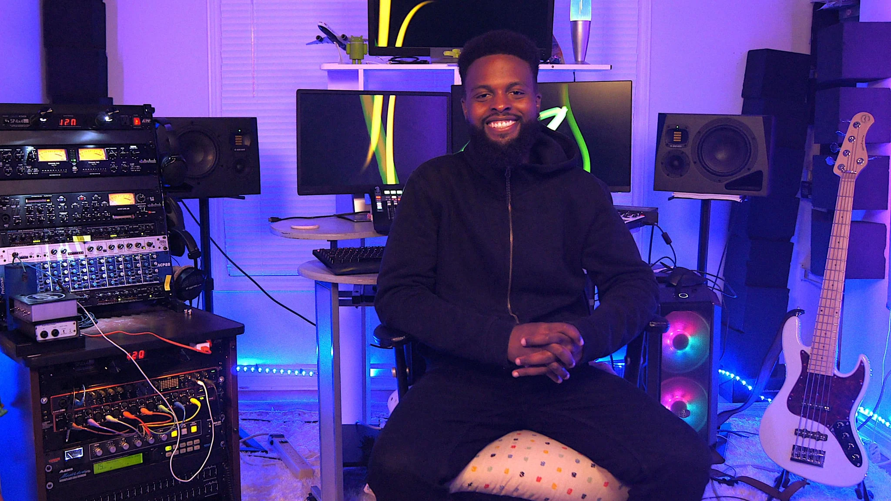

My name is Elorm Agbeyaka. I am a passionate musician, audio engineer and producer dedicated to helping artists bring their musical visions to life. With over 15 years of experience playing bass across a wide range of genres, I have honed my skills in crafting music that engages and inspires the listener.
Collaboration is at the heart of everything I do. I love working closely with artists and performers, helping them shape their ideas into something they can be truly proud of. Whether it is playing bass, producing, or polishing a track to perfection, I am here to elevate your music and make your vision a reality.

Watch
Placeholder caption for the featured video.
Bass Playing
Session and live bass work. Filter by genre to find something close to your project.
Filter by Genre
Click or tap on any of the tracks below to listen!
Production, Mixing & Mastering
Production, mix and master credits. Filter by what was done on the track, or by genre.
This is where ideas become reality. I am passionate about helping you bring your music to life. Whether you are starting with a rough demo or looking to refine a fully written track, I will help every step of the way. I can assist with songwriting, arrangements, top-lining, and handle every aspect of the recording process.
Together we will craft a product that will make you proud, reflect your vision and resonate with your audience. My studio is equipped for recording vocals, acoustic and electric guitars, bass, woodwind, brass, synths and more, with industry-grade results. All the industry standard software is available.
Listen to some of my production works, and let’s talk about how we can bring your ideas to life.
Your Vision, Brought to Life
This is where ideas become reality. I am passionate about helping you bring your music to life. Whether you are starting with a rough demo or looking to refine a fully written track, I will help every step of the way. I can assist with songwriting, arrangements, top-lining, and handle every aspect of the recording process.
Together we will craft a product that will make you proud, reflect your vision and resonate with your audience. My studio is equipped for recording vocals, acoustic and electric guitars, bass, woodwind, brass, synths and more, with industry-grade results. All the industry standard software is available.
Listen to some of my production works, and let’s talk about how we can bring your ideas to life.
I believe that every track has a story, and my job is to help your stories stand out. I bring balance, depth, and clarity to your music, while highlighting the nuances that make it unique. I will make sure every element of your song fits perfectly, delivering the vibes and intentions of your music.
Mastering is the final step in making your music shine. This is where tracks gain that extra polish, ensuring they sound balanced, clear, and professional on any system. The goal here is to bring out the best in your music, staying true to your artistic intent and sounding commercially competitive.
Whether you need a single track or a full album mastered, I focus on achieving loudness, clarity, and cohesion without losing the distinct characteristics of your music. Since mastering is a blend of technical expertise and artistic choices, working with a musician is the way to go to finalize your songs for streaming, radio or live performances.
Filter by Credit
Filter by Genre
Click or tap on any of the tracks below to listen!
Reviews & Testimonials
What artists and clients have to say about working together.
“Working with Elorm was nothing short of a fun, organic and creative process. He was quick to respond, patient, and precise in his execution and assisted me every step of the way. He is my go-to when it comes to mixing and mastering and he treats his clients like family. If you are looking for quality and care to your tracks or you wanna bring something to life and just give it that elevation on a professional level, I always recommend Elorm.”
Lewis "Kilcasca" De Marcy Pugin
Singer-Songwriter/Producer/Performer
“"Elorm is truly one of my favourite people that I’ve ever worked with! He is incredibly skilled, detail-oriented, attentive, and intuitive when it comes to creating music. He approaches projects with an open and collaborative spirit, always ensuring that the artist feels heard and that their vision for the song is front and centre. Working with Elorm was music to my ears (literally and figuratively!), and I look forward to many more collaborations in the future. If you’re looking for a producer and/or mixing engineer, he’s your guy!"”
Natalia Valencia
Singer-Songwriter/Performer
“"I’ve had the immense pleasure of working with Elorm on multiple occasions, both live and in the studio. Apart from being an absolutely brilliant bass player, he’s an utter professional, a mature musician who is versatile, and above all a kind human being. The Toronto music scene is lucky to have him. I look forward to working with him soon again."”
Mir Kashif Iqbal
Singer-Songwriter/Guitarist/Producer
“"Elorm has an incredible ability to bring songs to life, offering creative production options that elevate every track. His intuition and versatility make him a perfect collaborator, especially for artists who need guidance in shaping their sound. Working with him was a fun, easy and transformative experience."”
Hamza Rehman
Singer-Songwriter/Guitarist/Producer
“"Elorm is probably one of Ontario's best bassists and all around a really great dude to work with. I've known him for many years and have done both studio recording and live work with him - he is very professional, courteous, and never fails to deliver on quality work. You won't regret it if you hire him for your next project."”
“"Elorm is the kind of guy who shows up, cares about his craft, and enriches your sound. Having worked with him both in the studio and in live performance settings, I can promise that he delivers!"”
Michael Friedman
Drummer/Engineer/Producer/Coach
“"Elorm is literally one of the most professional and talented musicians I know! His keen ear as a composer and engineer always add a much needed personal touch to any song or mix. He's been a core part of all the music projects I've taken on in the last few years and will continue to be for years to come!"”
Matthew Leandres (Lattitude)
Singer-Songwriter/Producer/Performer
Get in Touch
Placeholder contact blurb - every project is unique, rates available on request. Reach out to talk about your music.